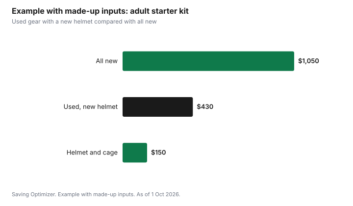

Sports · Canada
Adult Hockey Gear: What to Buy Used, What to Buy New and How to Fit It
Adults starting rec hockey can buy most of their gear used and save a lot, but the helmet and cage need care. Health Canada's guidance on second-hand products says ice hockey helmets must meet CSA standard Z262.1 and display that number and the date of manufacture, and that helmets more than five years old should not be bought or sold, because the materials may break down with age. Face protectors must show CSA Z262.2. Shoulder pads, elbow pads, shin guards, pants and gloves are usually fine used if they fit and are intact. In the made-up example below, a used starter kit with a new helmet costs $430, against $1,050 all new.
Key takeaways
- Helmets must meet CSA Z262.1 and show the standard number and manufacture date.
- Health Canada: helmets more than five years old should not be bought or sold.
- Cages and visors must show CSA Z262.2; no cracks or bent wires.
- Pads, pants and gloves are usually fine used if they fit and are intact.
- Skates are worth fitting carefully, new or used.
- Example with made-up inputs: $430 for a used kit with a new helmet versus $1,050 new.
Helmets and certification: buy new
Health Canada's Industry Guide to Second-hand Products summarizes the Ice Hockey Helmet Regulations for anyone selling used gear. Ice hockey helmets must meet the performance and labelling requirements of CSA standard Z262.1, and the number CSA Z262.1 must appear on the helmet along with the date of manufacture. Helmets should be in good condition with no cracks or missing padding or hardware, should not have been modified by drilled holes, stickers or repainting, and must have a functioning chin strap. Helmets more than five years old should not be bought or sold.
Face protectors (cages and visors) must meet CSA standard CAN3-Z262.2-M78, and the guide recommends the most current CSA Z262.2 standard. The CSA Z262.2 number must appear on the face protector, which should be in good repair, with no cracks or bent wires, and fastened securely. Because the label and date rules are strict, many adults simply buy a new helmet and cage and save on everything else.
| Check | Requirement or guidance |
|---|---|
| CSA label on helmet | CSA Z262.1 must appear |
| Manufacture date | Must be displayed |
| Age | More than five years old should not be bought or sold |
| Condition | No cracks, missing padding or hardware |
| Modifications | No drilled holes, stickers or repainting |
| Chin strap | Must work |
| Cage or visor | CSA Z262.2 label; no cracks or bent wires |
Gear that is safe to buy used
Most other protective gear is about fit and condition. Check that straps and buckles work, padding is intact and not compressed flat, and there are no cracks in hard plastic caps. Gloves wear through at the palm first, so check for holes. Pants should fit at the waist and cover the thighs and tailbone.
| Item | Buy used? | Check |
|---|---|---|
| Shoulder pads | Yes | Straps, caps, fit across the chest |
| Elbow pads | Yes | Cap covers the elbow when bent |
| Shin guards | Yes | Kneecap centred; no cracks |
| Pants | Yes | Waist fit; thigh and tailbone padding |
| Gloves | Yes | Palms intact; wrist cuff fits |
| Neck guard | Optional | Fit and condition |
| Jock or jill | New for hygiene | Cup intact |
| Stick | Yes | No cracks; right flex and length |
| Bag | Yes | Zippers work |
Skates and fitting
Skates are the most important fit. They should hold the heel firmly, let the toes brush the front when standing, and leave no pressure points after a few minutes. Used skates can be good value if the boot still supports the ankle and the blade has steel left. Budget a sharpening for any used pair. For a full checklist, see buying and sharpening skates.
Where to find used gear
Sports swaps run by minor hockey associations and community groups, second-hand sports stores, online marketplaces and teammates who are upgrading are all good sources. Bring your skates and a helmet when trying shoulder pads and pants, since they need to work together. Ask sellers for the helmet's manufacture date and a photo of the CSA label before meeting.
- Community sports swaps; check your local calendar.
- Second-hand sports stores, where you can try gear on.
- Online marketplaces; ask for photos of labels and dates.
- Teammates and league message boards.
When to replace gear
Used gear saves money only if it still protects you. Replace any piece that no longer fits after a change in weight, has cracked hard caps, broken straps or padding that has gone flat and no longer springs back. Gloves with holes in the palm can be repaired by some shops for less than a new pair. For helmets, check the manufacture date each season against Health Canada's five-year guidance for buying and selling, and replace any helmet after a crack or a hard impact. Write the purchase date on a piece of tape inside the helmet so you do not have to guess later.
| Sign | Applies to |
|---|---|
| Cracked hard plastic | Helmet, shoulder caps, shin guards, elbow caps |
| Padding flat or crumbling | All pads |
| Broken straps or buckles | Pads, helmet chin strap |
| Holes in palms | Gloves (repair may be possible) |
| Poor fit | Any item |
| Bent wires or cracks | Cage or visor |
Cleaning and odour control
Used gear often comes with a smell, and new gear gets one quickly. Air out gear after every skate rather than leaving it in a closed bag, use a drying rack or hang it near a fan, and wash removable liners, jerseys and socks. Check each item's care label before machine washing. Wipe the helmet and cage with a mild soap. Some sports stores offer gear sanitizing services; ask about the price.
A starter-kit budget
These numbers are an example with made-up inputs. They are not store prices. An adult buys a new helmet with a cage for $150, used skates for $90 plus a $10 sharpening, used shoulder pads, elbow pads and shin guards for $60, used pants for $40, used gloves for $35, a new jock for $25 and a stick for $20. The kit costs $430. Buying everything new at the same made-up mid-range prices costs $1,050.
| Item | Used, new helmet | All new |
|---|---|---|
| Helmet and cage | $150 | $150 |
| Skates and sharpening | $100 | $300 |
| Shoulder, elbow, shin | $60 | $200 |
| Pants | $40 | $120 |
| Gloves | $35 | $100 |
| Jock | $25 | $25 |
| Stick | $20 | $155 |
| Total | $430 | $1,050 |

Plan
- Buy a new or recent CSA-certified helmet and cage.
- Fit skates carefully and sharpen before your first skate.
- Buy pads, pants and gloves used, checking fit and condition.
- Bring your gear when trying pieces that need to fit together.
- Set up a drying routine from day one.
- Check your league's equipment rules before the first game.
For league fees and ice costs, see adult rec hockey costs.
Sources
- Health Canada, Industry Guide to Second-hand Products (Including Children's Products), canada.ca (archived copy captured 8 May 2026), as of 1 Oct 2026. Ice hockey helmet CSA Z262.1 label, manufacture date, five-year guidance, condition and chin strap; face protector CSA Z262.2 requirements.
- The used gear, fitting and cleaning checklists are planning tools written for this guide.
- The gear prices and totals in the example are an example with made-up inputs.
Frequently asked questions
Can I buy a used hockey helmet in Canada?
Only with care. Health Canada's guidance says helmets must show CSA Z262.1 and the manufacture date, must have a working chin strap and no cracks or modifications, and helmets more than five years old should not be bought or sold.
What hockey gear is fine to buy used?
Shoulder pads, elbow pads, shin guards, pants, gloves, sticks and bags are usually fine used if they fit and are intact. Buy a jock new for hygiene.
What certification should a hockey cage have?
Face protectors must meet CSA standard CAN3-Z262.2-M78, the current CSA Z262.2 is recommended, and the CSA Z262.2 number must appear on the protector.
How much does adult hockey gear cost?
It depends on new versus used. In this guide's example with made-up inputs, a used kit with a new helmet costs $430 and an all-new kit $1,050.
How do I stop hockey gear from smelling?
Air gear out after every skate, use a drying rack or fan, wash liners and jerseys following care labels, and wipe the helmet and cage.
Researched and drafted with AI assistance and fact-checked against official Canadian sources. How we create content.
Disclosure: Saving Optimizer may earn a commission if a partner link is added later, such as a sporting goods offer type. No partnership is claimed on this page, and no brand is ranked. Education only.